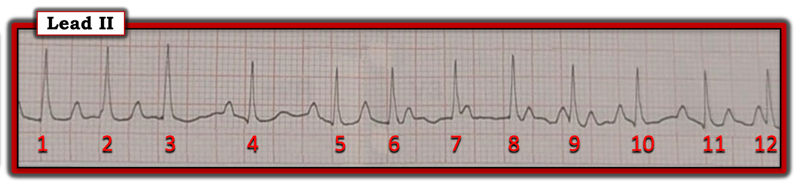
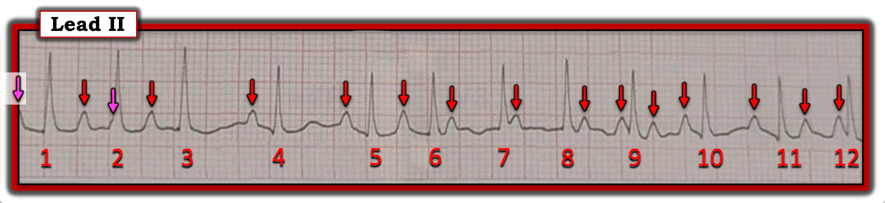
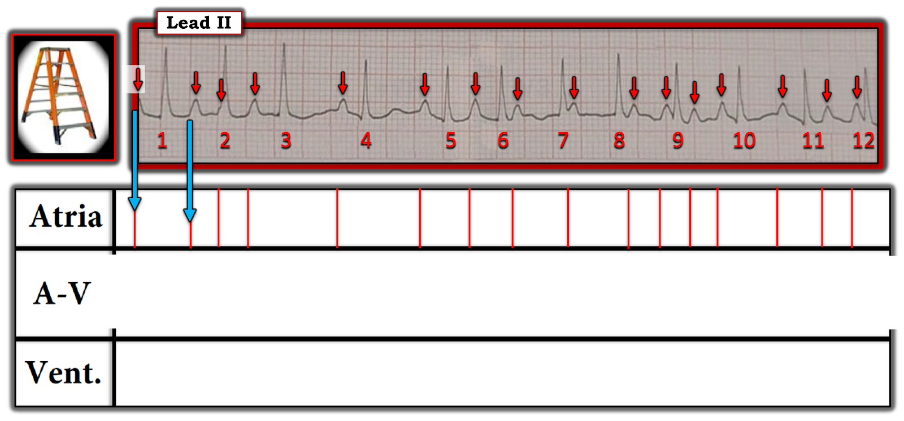
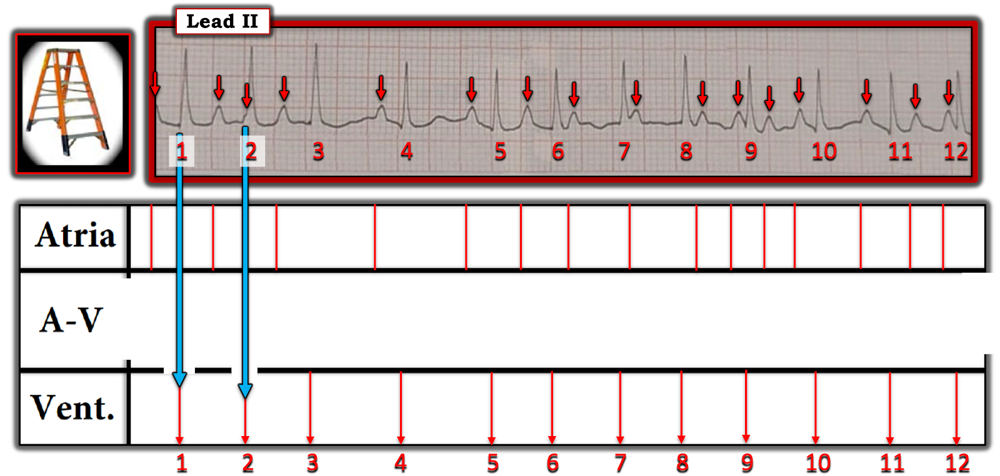
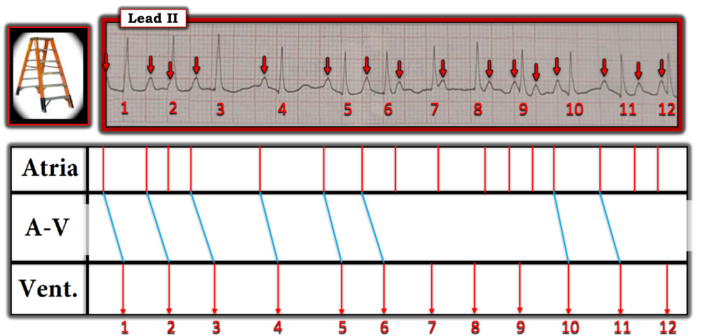
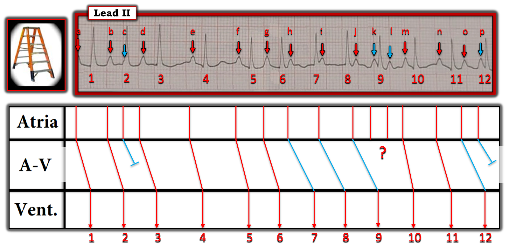
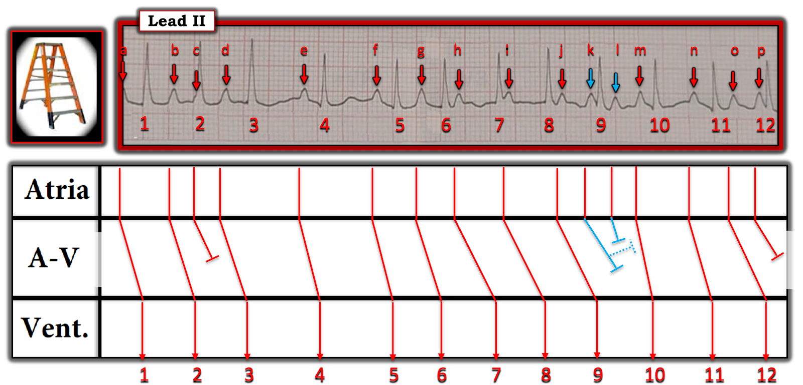
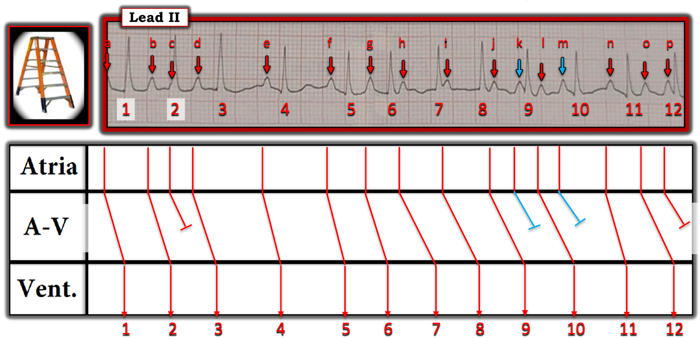

ECG Blog #398 — Bệnh Graves không được kiểm soát ...
Điện tâm đồ ở Hình 1 được ghi từ một phụ nữ trung niên đến khám vì "hồi hộp đánh trống ngực". Đáng chú ý — bà có tiền sử cường giáp chưa điều trị.
CÂU HỎI:
- BẠN sẽ diễn giải nhịp ở Hình 1 như thế nào?
- Bạn có thể giải thích hoạt động nhĩ trong dải nhịp này không?


Cách tiếp cận CỦA TÔI với nhịp ở Hình 1:
Như trong ECG Blog #185 — tôi ưa dùng cách tiếp cận Ps, Qs, 3R để đọc nhịp tim — bắt đầu với bất kỳ thông số nào trong 5 Thông số MẤU CHỐT này dễ đánh giá nhất đối với bản ghi trước mặt tôi:
- Ít nhất là trên dải nhịp một chuyển đạo II thấy ở Hình 1 — Phức bộ QRS có vẻ hẹp.
- Sóng P có hiện diện (xem ĐIỂM THEN CHỐT #1 bên dưới).
- Nhịp trong bản ghi hôm nay không đều (Regular). Tần số (Rate) của nhịp thay đổi do sự không đều này — nhưng tần số thất chung hơi trên 100 lần/phút (tức là, phần lớn các khoảng R-R ngắn hơn 3 ô lớn một chút).
- LƯU Ý: Tạm thời, tôi sẽ gác lại thông số cuối cùng trong 5 Thông số MẤU CHỐT — đó là xác định xem sóng P có (hay không) liên quan (Related) với các phức bộ QRS lân cận.
ĐIỂM THEN CHỐT (PEARL) #1: Sau khi đã xét 5 Thông số MẤU CHỐT — bước tiếp theo DỄ NHẤT để xác định cơ chế của một nhịp phức tạp — là đánh dấu các sóng P.
- Các mũi tên ĐỎ ở Hình 2 — đánh dấu những sóng P mà ta có thể nhận ra dễ dàng.
- Tôi đã tô mũi tên thứ 1 và thứ 3 ở Hình 2 màu HỒNG, vì tuy không rõ bằng — nhưng hẳn có thể thấy rằng các mũi tên HỒNG này cũng đánh dấu những chỗ lệch "thêm" chính là sóng P (tức là, nằm trong sóng T chỉ thấy một phần ở ngay đầu dải nhịp này và làm biến dạng đoạn đi lên ban đầu của sóng R của nhát #2).
- Chẳng phải ít nhất việc đánh giá nhịp ở Hình 2 đã DỄ HƠN — giờ khi mọi sóng P đều đã được đánh dấu?
LƯU Ý: Mặc dù nguyên nhân thường gặp nhất gây ra các khoảng ngưng bất ngờ trong một nhịp là có một hay nhiều PAC bị blốc — tôi không thấy biến dạng ở bất kỳ sóng ST-T nào của dải nhịp một chuyển đạo này có thể phù hợp với PAC bị blốc.
- Thay vào đó — hình thái sóng P ở Hình 2 mà ta thấy được đánh dấu bằng từng mũi tên đều giống nhau. Điều này gợi ý rằng ta đang đối mặt với một ổ nhĩ duy nhất vừa không đều vừa phát xung nhanh!
- Ủng hộ cho việc nhịp nhĩ nền là ATach (nhịp nhanh nhĩ — Atrial Tachycardia) — là việc ta thấy 3 sóng P liên tiếp có hình thái sóng P tương tự và khoảng P-P tương tự ở đầu bản ghi (giữa các nhát #1 đến #3) — rồi 4 sóng P liên tiếp có hình thái sóng P tương tự và khoảng P-P tương tự ở gần cuối bản ghi (giữa các nhát #8 đến 10).
- Dù vậy — rõ ràng có sự thay đổi khoảng P-P ở những phần khác của bản ghi hôm nay.
ĐIỂM THEN CHỐT #2: Điều quan trọng là phải biết rằng "không phải loạn nhịp nào cũng tuân theo quy tắc!" Vì vậy — đôi khi ta cần suy nghĩ "ra ngoài khuôn khổ" để tìm ra lời giải thích hợp lý nhất cho một loạn nhịp nhất định.
- Ví dụ về những tình trạng nổi tiếng là gây ra loạn nhịp "không tuân theo quy tắc" gồm: i) Tăng kali máu (xem ECG Blog #275); ii) Ngừng tim; và, iii) Blốc do cường phế vị (xem ECG Blog #61).
- Ca hôm nay, trong đó bệnh nhân bị cường giáp chưa điều trị — là thêm một tình trạng nữa có thể đi kèm những dạng bất thường của các loạn nhịp thường gặp "không tuân theo các quy tắc thông thường".
ĐIỂM THEN CHỐT #3: Mặc dù ATach thường là một nhịp nhĩ khá đều — đôi khi vẫn có thể có phần nào không đều. Dù vậy — tôi không nhớ đã từng thấy mức độ không đều nhiều đến thế trong nhịp nhĩ của một bệnh nhân ATach như ta thấy ở bản ghi hôm nay.
- Như đã nêu ở Điểm then chốt #2 — nhiều khả năng lý do của mức độ không đều quá mức này trong nhịp ATach hôm nay là hậu quả của tình trạng cường giáp không được kiểm soát của bệnh nhân.
- Dùng thuốc chẹn ß (đường uống và tĩnh mạch khi cần để kiểm soát tần số) — là điều trị thường được lựa chọn cho nhịp nhanh xoang và/hoặc các nhịp SVT khác đi kèm cường giáp. "Tin tốt" — là một khi tình trạng tuyến giáp của bệnh nhân này được kiểm soát — rối loạn nhịp nhanh nhĩ có lẽ sẽ hết.


Vậy Thì Nhịp ở Hình 2 là gì?
Cho đến giờ — ta mới chỉ diễn giải được một phần nhịp trong bản ghi hôm nay. Những gì ta biết cho đến lúc này:
- Bệnh nhân này bị cường giáp không được kiểm soát — và vì vậy (như ở Điểm then chốt #2) — các loạn nhịp đi kèm tình trạng này "có thể không tuân theo các quy tắc thông thường".
- Dù vậy — TẠI SAO nhịp thất lại không đều đến thế?
ĐIỂM THEN CHỐT #4: Rất hay gặp dẫn truyền Wenckebach ở bệnh nhân ATach. Vì vậy — tôi luôn tìm khả năng này mỗi khi thấy nhịp không đều ở một bệnh nhân ATach. Những gì ta biết:
- Khoảng PR trước các nhát #4, 5 và 11 trông như nhau — điều này gợi ý mạnh rằng ít nhất 3 nhát này có được dẫn truyền!
- Có những khoảng PR khác (tức là, khoảng PR trước nhát #3) — dài hơn một chút — khiến tôi cân nhắc khả năng có một dạng dẫn truyền Wenckebach nào đó ở bệnh nhân ATach này.
LƯU Ý: Giá như tôi có một bản ghi 12 chuyển đạo được ghi đồng thời. Do không có — tôi giả định rằng cả 12 phức bộ QRS thấy trong dải nhịp hôm nay đều là nhát trên thất, mặc dù một số nhát trong đó cao hơn hẳn những nhát khác trên chuyển đạo theo dõi duy nhất này.
- ĐIỀU CỐT LÕI: Ở thời điểm này trong quá trình phân tích — tôi nghi ngờ rằng nhịp hôm nay là một dạng bất thường của ATach, trong đó nhịp nhĩ không đều rõ rệt (do cường giáp không được kiểm soát của bệnh nhân này) — kèm một dạng dẫn truyền Wenckebach nào đó giải thích phần lớn sự không đều của nhịp và sự thay đổi các khoảng PR.
- XIN NHẤN MẠNH: Cách diễn giải nhịp hôm nay theo "Điều cốt lõi" ở trên, phải thừa nhận là khá chung chung — nhưng đã đủ để xử trí lâm sàng phù hợp. Lý do chừng ấy là tất cả những gì cần thiết về mặt lâm sàng — là vì ta biết rằng nhịp hôm nay có lẽ sẽ hết một khi cường giáp của bệnh nhân này được điều trị.
- Dù vậy, do mong muốn về mặt trí tuệ được hiểu rõ hơn cơ chế khả dĩ của nhịp hôm nay — tôi nghĩ cách tốt nhất để tìm hiểu điều này là dựng một giản đồ bậc thang (laddergram).
======================================
MINH HỌA BẰNG GIẢN ĐỒ BẬC THANG:
- Các chú thích nối tiếp nhau ở 5 Hình tiếp theo minh họa quá trình suy nghĩ của tôi khi dựng giản đồ bậc thang mà tôi đề xuất qua lần lượt Hình 3 đến Hình 7. (Xem ECG Blog #188 để ôn lại cách đọc và/hoặc vẽ giản đồ bậc thang).
- XIN NHẤN MẠNH — Giản đồ bậc thang hôm nay không dễ vẽ — vì như đã nhấn mạnh ở trên, nhịp hôm nay không tuân theo các quy tắc thông thường. Dù vậy — tôi hy vọng rằng ngay cả những bác sĩ còn ít kinh nghiệm đọc giản đồ bậc thang cũng có thể theo dõi được các hình nối tiếp này. Hãy theo tôi nhé!






— — — —
Vì nhịp hôm nay phức tạp — tôi đã phải đưa ra những giả định cần được "kiểm chứng". Như ở ĐIỂM THEN CHỐT #4 — tôi cho rằng hợp lý nhất là các nhát #4,5,11 được dẫn truyền xuống tâm thất (vì khoảng PR đứng trước mỗi nhát này đều như nhau — và điều đó khó xảy ra do ngẫu nhiên). Tôi thêm vài đường XANH nhạt nữa (trước các nhát #1,2,3; 6; và 10 — vì tôi cho là hợp lý rằng các sóng P đứng trước những nhát này cũng nhiều khả năng được dẫn truyền).


— — — —
Còn lại 4 sóng P có mũi tên XANH ( = các sóng P c,k,l và p). Tôi cho là hợp lý khi đề xuất rằng các sóng P c và p không đi ra khỏi được Tầng Nút AV. Như vậy còn lại 2 sóng P có mũi tên XANH ( = các sóng P k và l).


— — — —
Như vậy còn lại sóng P l — là một sóng P không có bất kỳ khả năng nào được dẫn truyền. Dẫn truyền ngược dòng từ sóng P k (đường XANH chấm chấm kết thúc bằng một đầu cụt) có thể giải thích việc sóng P l không được dẫn truyền.
=======================================
Tổng Hợp Lại Tất cả:
- ĐIỂM THEN CHỐT #5: Đôi khi — một số loạn nhịp phức tạp sẽ không cho phép mô tả chính xác cơ chế của chúng từ điện tâm đồ bề mặt. "Điểm then chốt" — là nhận ra rằng điều này không quan trọng! Điều thực sự có ý nghĩa — là "chủ đề" của nhịp.
- "Chủ đề" của nhịp hôm nay — là ở bệnh nhân cường giáp không được kiểm soát này — có một ATach không đều rõ rệt với những giai đoạn dẫn truyền Wenckebach ra khỏi nút AV. Vì nhịp hôm nay không tuân theo các quy tắc thông thường — có lẽ không đáng bỏ thời gian và công sức để cố đạt được một chẩn đoán nhịp chính xác hơn.
- Như đã nêu ở trên đối với các tình trạng khác mà tôi dẫn ra ở Điểm then chốt #2 — NẾU tình trạng nền (gây bệnh) có thể được điều chỉnh — thì loạn nhịp thường sẽ hết! Điều này đặc biệt đúng với ca hôm nay, ở chỗ NẾU tình trạng tuyến giáp của bệnh nhân này được kiểm soát — thì cả ATach không đều lẫn dẫn truyền Wenckebach từng lúc có lẽ đều sẽ hết.
==================================
Lời cảm ơn: Xin cảm ơn Hao Nguyen (từ Cao Lãnh, Việt Nam) đã chia sẻ ca bệnh và bản ghi này.
==================================
Các bài ECG Blog liên quan đến ca hôm nay:
- ECG Blog #205 — Ôn lại Cách tiếp cận hệ thống của tôi để đọc điện tâm đồ 12 chuyển đạo.
- ECG Blog #185 — Ôn lại cách tiếp cận Ps, Qs, 3R để đọc nhịp một cách có hệ thống.
- ECG Blog #188 — Ôn lại cách đọc và vẽ giản đồ bậc thang (kèm LINK tới hơn 90 ca có giản đồ bậc thang — nhiều ca có minh họa tuần tự từng bước).
PHẦN BỔ SUNG (ngày 7 tháng 10 năm 2023):
Tôi vừa nhận được email từ H.S. Cho = 조현석 (từ Seoul, Hàn Quốc) — trong đó anh đặt câu hỏi liệu thay vì sóng P "m" dẫn truyền nhát #10 — thì có lẽ thật ra chính sóng P "l" mới là sóng được dẫn truyền. Đây là một giả thuyết hợp lý — vì khoảng PR từ m đến nhát #10 quả thật có vẻ hơi ngắn hơn các khoảng PR đứng trước các nhát #4 và 5 (và ta biết rằng các sóng P e và f được dẫn truyền).
- Điều tôi cũng thấy rất hợp lý ở giả thuyết của H.S. Cho — là các diễn biến trên giản đồ bậc thang ở các nhát #9 và 10 giờ đây trông tương tự các diễn biến trên giản đồ bậc thang ở các nhát #2 và 3.
- ĐIỀU CỐT LÕI: Như tôi đã nhấn mạnh trước đó — cơ chế chính xác của bản ghi hấp dẫn này rất khó nắm bắt. Dù vậy, bất kể giản đồ bậc thang nào là "đúng" — "chủ đề" của nhịp hôm nay vẫn là ở bệnh nhân cường giáp không được kiểm soát này — có một ATach không đều rõ rệt với những giai đoạn dẫn truyền Wenckekbach ra khỏi nút AV.
- Xin CẢM ƠN H.S. Cho vì gợi ý rất xác đáng của anh!

